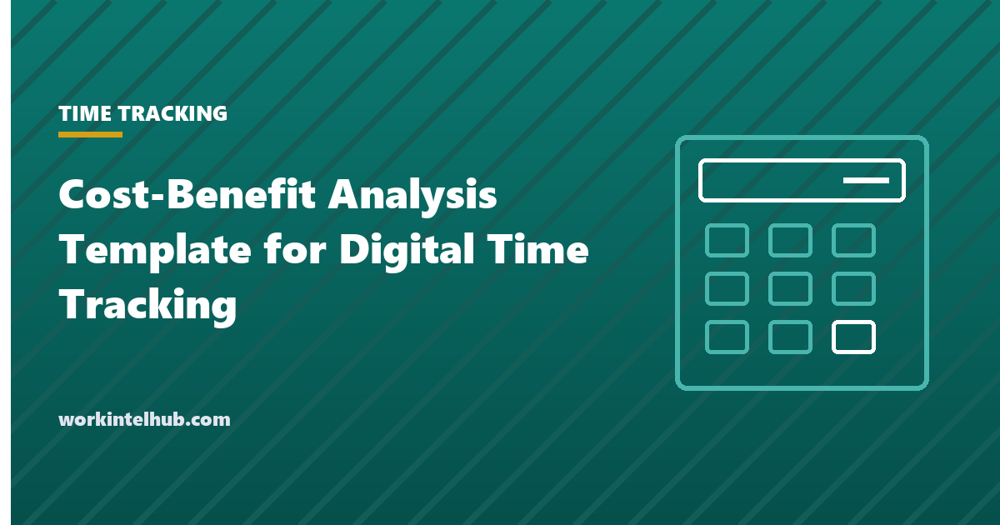

Cost-Benefit Analysis Template for Digital Time Tracking

Digital time tracking is usually sold on productivity and bought on payroll. The case that survives a finance review is the second one: what the current method leaks in unrecorded overtime, buddy punching, rounding, manual timesheet processing and unbilled hours, against what the software, the rollout and the ongoing administration cost. Put honestly, the numbers are often decisive one way or the other within a year.
This template structures that analysis. The Excel version takes your headcount, wage rates and current process and calculates the annual cost of the status quo, the annual cost of the digital option, the net benefit, the payback period and the three-year return. The Word and PDF versions hold the written case: assumptions, risks and the recommendation, in the form a leadership team expects.
Download the templates
Free files: Word, Excel and PDF
Three files, free, no email required. Word to edit, Excel to track, PDF to print or share.
Templates open in Microsoft Word, Excel, Google Docs and Sheets, LibreOffice and any PDF reader. Free to use and adapt for your organisation.
What is in the template
- Inputs. Fifteen numbers: headcount, wages, admin hours, leakage minutes, billing lost, software and rollout costs. Each has a note on the typical range.
- Analysis. Current-state cost, digital-option cost, benefits, net benefit, cumulative position, payback in months and three-year ROI, all formula-driven.
- Assumptions and risks. Where each number came from and how confident you are, plus a scored risk register; finance teams read these before the totals.
- Written case. The Word and PDF versions carry the same structure as a document for the people who approve it.
Where the money actually is
The benefit most organisations underestimate is payroll leakage: the minutes between arrival and clock-in on paper, breaks that run long and are not deducted, quarter-hour rounding that favours the employee, and hours entered from memory at the end of the week. Studies of manual timekeeping consistently find five to fifteen minutes a day per employee; at eight minutes, fifty employees on $24 an hour leak about $40,000 a year, of which digital tracking typically recovers half to four fifths. The time theft statistics page collects the sources.
The second benefit is administrative: the hours a manager or payroll clerk spends collecting, chasing and correcting timesheets, which the template prices at the admin rate. The third, for firms that bill, is unbilled time; the billable hours calculator shows how small daily losses compound.
Productivity gains from seeing how time is spent are real but hard to defend in a cost-benefit review. Leave them out of the numbers and mention them in the recommendation.
Costing the digital option honestly
Subscription prices are the visible cost; the time tracking software comparison lists them. The invisible costs are the implementation and integration with payroll, the training hours, the ongoing administrator, the kiosk hardware for sites without devices, and the change management when employees read "time tracking" as "monitoring". The template puts each on its own line so the case cannot be accused of hiding them.
Include the compliance step too: where tracking captures location or biometrics, or where a state requires notice of electronic monitoring, the policy and notice work is a real cost and a real benefit. The monitoring laws by state page says where.
Presenting the case
- Lead with payback in months and the net annual benefit; most approvers stop reading after those two numbers.
- Show the sensitivity: the net benefit at half the assumed leakage recovery, so the case survives a sceptic.
- Name the assumptions with the least confidence and how you will test them in a pilot.
- State the risks, especially employee reaction, with the mitigation: notice, policy, and tracking hours rather than activity.
- Ask for a decision, not a discussion.
Key takeaways
- Build the case on payroll leakage, admin hours and unbilled time, which finance can verify, not on productivity claims.
- Cost the rollout, training, integration, hardware and ongoing admin, not just the subscription.
- Show payback in months and the net benefit at a pessimistic recovery rate.
- Treat notice, policy and employee communication as part of the project, with a cost and a benefit.
Frequently asked questions
How do I calculate the ROI of time tracking software?
Total the current-state costs (manual admin hours, payroll leakage, unbilled time, error correction), total the digital option's costs (subscription, hardware, implementation, training, ongoing admin), estimate the share of leakage and billing recovered, and compute net benefit, payback in months and three-year return. The Excel template does this from fifteen inputs.
What is payroll leakage?
Paid time that was not worked and was not deducted: unrecorded breaks, rounding in the employee's favour, early punches, hours reconstructed from memory. Manual systems typically leak five to fifteen minutes per employee per day, which is the largest line in most time tracking business cases.
What does time tracking software cost?
Published prices run from free tiers to about $4 to $12 per user per month for most team plans, with enterprise and workforce management suites quoted. Add implementation, integration, training and an administrator's time; the comparison pages on this site list the subscription prices.
Should I include productivity gains in the analysis?
Mention them in the recommendation but keep them out of the calculated benefit. They are real but hard to verify, and a case built on them is easy to challenge. Leakage, admin hours and billing recovered are enough on their own in most organisations.
What is a typical payback period?
For hourly workforces on manual timesheets, three to nine months is common once leakage and admin time are counted. Salaried teams with no leakage and no billing may see no payroll payback at all, and the case has to rest on billing, capacity or compliance instead.